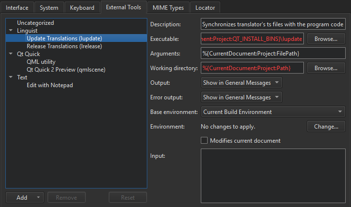

Use external tools
You can use external tools directly from Qt Design Studio. Qt Linguist, QML preview tools, and the default text editor for your system are preconfigured for use. You can change their default configurations and configure new tools.
To run the tools, select Tools > External, or use the x filter in the locator.
Configure external tools
You can change the configuration of preconfigured tools and configure additional tools in Qt Design Studio Preferences.

To configure external tools:
- Select Tools > External > Configure.
- Select Add > Add Tool to add a new tool. You can also select Add Category to add a new category.
- In the Executable field, specify the executable to run. If the executable is found in your system PATH variable, do not specify the path to it.
- In the Arguments field, specify optional arguments for running the executable.
- In the Working directory field, specify the path to the working directory.
- In the Output field, select how to handle output from the tool. You can ignore the output, view it in General Messages, or replace the selected text with the output in the code editor.
- In the Error output field, select how to handle error messages from the tool.
- In the Base environment field, use the default settings.
- In the Environment field, select Change to modify environment variable values for build and run environments in the Edit Environment dialog.
To globally change the system environment from the one in which Qt Design Studio is started, select Preferences > Environment > System, and then select Change in the Environment field.
- Select the Modifies current document check box to make sure that if the current document is modified by the tool, it is saved before the tool is run and reloaded after the tool finishes.
- In the Input field, specify text that is passed as standard input to the tool.
The category and tool are added to the Tools > External menu.
If you change the configuration of preconfigured tools, you can later revert the changes by selecting the Reset button.
The tool configurations that you add and modify are stored in XML format in the user configuration folder. For example, ~/config/QtProject/qtcreator/externaltools on Linux and macOS and C:\Users\username\AppData\Roaming\QtProject\qtcreator\externaltools in Windows. To share a configuration with other users, copy an XML configuration file to the folder.
See also Run QML files, Use external text editors, and Use Qt Linguist.